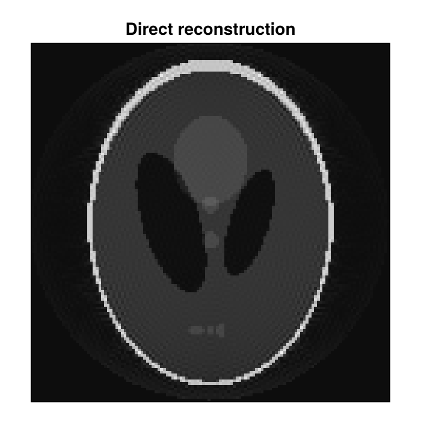

Create AcquisitionData from Arrays
Data that does not come from a file that MRIFiles reads, such as k-space data exported from other software or the samples of a sequence whose trajectory is stored separately, can be passed to MRIReco.jl as arrays. This guide shows how to create AcquisitionData from a Cartesian k-space array and from the k-space positions and samples of a non-Cartesian acquisition. Data Model explains the fields of this type.
Cartesian k-Space Arrays
AcquisitionData accepts a six-dimensional Array of complex floating-point numbers with the dimensions x, y, z or slice, coil, contrast and repetition, where x is the readout direction. This is the layout that kDataCart returns, as shown in Extract Cartesian k-Space, and permutedims brings an array with another order of dimensions into it. The array has to follow the convention of the centered Fourier transform, fftshift(fft(ifftshift(image))) for a single 2D image, which places the center of k-space at index N ÷ 2 + 1 of a dimension of length N. The transform runs along x and y and, for 3D data, along z. The example computes the k-space of a phantom in this way and adds the four dimensions that a single 2D image lacks:
using MRIReco, FFTW
using ImageUtils: shepp_logan
N = 128
phantom = shepp_logan(N)
kspace = fftshift(fft(ifftshift(ComplexF32.(phantom))))
acqData = AcquisitionData(reshape(kspace, N, N, 1, 1, 1, 1))
typeof(acqData)AcquisitionData{Float32, 2}The data has the precision of the array, here single precision. A direct reconstruction returns the phantom:
params = Dict{Symbol, Any}()
params[:reco] = "direct"
image = reconstruction(acqData, params)
image[:, :, 1, 1, 1, 1] ≈ phantomtrueThe constructor interprets the array as follows:
- By default, the third dimension is the second phase encoding direction of a 3D acquisition. If it holds the slices of a 2D acquisition, pass
enc2D = true. An array whose third dimension has the length 1 is always taken as 2D data. - Undersampled data is passed with zeros at the positions that were not measured. The constructor looks for them in the first coil and the first repetition of each contrast and, for 2D data, in the first slice. Where this part of the array is exactly zero, it leaves out the samples of all coils, slices and repetitions. The sampling pattern can therefore differ between contrasts, but not between slices or repetitions, and a measured sample that happens to be exactly zero there is left out as well (#348).
- The array does not contain the field of view, so
acqData.fovis zero, and so are the coordinates of the spatial axes of the image. If they are needed, set the field of view in millimeters, for exampleacqData.fov = (220.0, 220.0, 5.0). The image axes use the third entry as the distance between the slices of 2D data and as the extent of a 3D volume.
Non-Cartesian Nodes and Samples
For a non-Cartesian acquisition, AcquisitionData is created from the k-space positions of the samples, called nodes, and from the samples:
nodesis aMatrixwith one row per dimension and one column per sample;permutedimsconverts a matrix with one row per sample. 2D data needs exactly two rows, so remove a third row of zeros. The positions are given in units of the inverse pixel size of the image grid and have to lie in the interval[-0.5, 0.5]; values outside make the reconstruction fail. To get these units, divide positions in cycles per field of view by the matrix size along that dimension, or multiply positions in cycles per meter by the pixel size in meters. Positions in radians per pixel are divided by 2π. The first row belongs to the first dimension of the image, and the sign of the positions follows the signal model in Signal Model and Encoding Operators.- The samples of one contrast, slice and repetition form a matrix with one row per sample, in the order of the columns of
nodes, and one column per coil. An array with the dimensions sample, profile and coil becomes such a matrix withreshape(data, :, size(data, 3)), and a vector with the samples of a single coil withreshape(samples, :, 1). - The nodes and the samples need the same precision, for example
Float32nodes forComplexF32samples. Otherwise the constructor fails with aMethodError.
The example takes both arrays from a simulated radial acquisition with 200 profiles of 128 samples:
using MRISimulation
simParams = Dict{Symbol, Any}()
simParams[:simulation] = "fast"
simParams[:trajName] = "Radial"
simParams[:numProfiles] = 200
simParams[:numSamplingPerProfile] = N
simData = simulation(phantom, simParams)
nodes = kspaceNodes(trajectory(simData, 1))
samples = simData.kdata[1]
size(nodes), size(samples)((2, 25600), (25600, 1))A Trajectory holds the nodes together with the number of profiles and the number of samples per profile. Their product has to be the number of nodes, and nodes that are not organized in profiles can be passed as a single profile. circular = true marks a trajectory that covers a circular region of k-space, like the predefined non-Cartesian trajectories of MRIBase. Several reconstruction types, among them "direct", "standard" and "multiCoil", then set the corners of the image to zero. The default is false. The k-space data is passed as a three-dimensional array of matrices with the dimensions contrast, slice and repetition, which has a single entry here:
tr = Trajectory(nodes, 200, N; circular = true)
kdata = fill(samples, 1, 1, 1)
acqData = AcquisitionData(tr, kdata; encodingSize = (N, N))encodingSize is the size of the image grid as a tuple. It cannot be derived from the nodes, so always pass it; the reconstruction uses it as the default image size. The field of view can be passed in the same way, in millimeters and as a tuple of three Float64 numbers, for example fov = (220.0, 220.0, 5.0). For a 3D trajectory, encodingSize has three entries, and kdata holds the whole volume as a single slice. A direct reconstruction shows whether the arrays were passed correctly:
using CairoMakie
image = reconstruction(acqData, params)
fig = Figure(size = (350, 350))
ax = Axis(fig[1, 1], aspect = DataAspect(), yreversed = true,
title = "Direct reconstruction")
heatmap!(ax, abs.(image[:, :, 1, 1, 1, 1])', colormap = :grays)
hidedecorations!(ax)
fig
If the image is mirrored or transposed, the nodes follow another convention: the opposite sign in a row of nodes mirrors the image along the dimension of that row, and swapped rows transpose it.
The constructors do not check that the sizes of the arrays fit together. A number of samples that differs from the number of nodes makes the reconstruction fail, and a wrong number of profiles goes unnoticed until the profiles or the sampling times are used, for example when the data is converted into raw data. This AcquisitionData constructor also ignores keywords that it does not know, so a misspelled keyword has no effect.
Several Contrasts, Slices and Repetitions
For data with several contrasts, slices or repetitions, kdata holds one matrix for each combination. A trajectory belongs to one contrast and is shared by all slices and repetitions. Pass a vector with one trajectory per contrast, even if all contrasts were acquired with the same trajectory: with a single trajectory for several contrasts, the constructor succeeds, but the reconstruction fails, by default with a BoundsError (#349).
Create a separate Trajectory for each contrast, because some functions, such as changeEncodingSize2D, change the trajectory of each contrast in turn and would change a shared one once per contrast. Multi-contrast data from a Cartesian array is affected by this, because its contrasts share one trajectory (#350).
The following lines create kdata from an array with the dimensions sample, coil, contrast and slice, which here repeats the samples from above for two contrasts and three slices:
data = repeat(samples, 1, 1, 2, 3)
kdata = [data[:, :, c, s] for c in 1:2, s in 1:3, r in 1:1]
trs = [Trajectory(nodes, 200, N; circular = true) for c in 1:2]
acqData = AcquisitionData(trs, kdata; encodingSize = (N, N))
size(reconstruction(acqData, params))(128, 128, 3, 2, 1, 1)The image has three slices in its third and two contrasts in its fourth dimension.
Sampling Times
A reconstruction with a correction map, for example for an off-resonance correction, uses the sampling times, which the Trajectory constructor sets. By default, each profile starts at time zero and takes 1 ms. With its keywords TE and AQ, as in Trajectory(nodes, 200, N; TE = 0.01, AQ = 0.004), each profile starts at the time TE and takes the time AQ, both in seconds. Alternatively, its keyword times takes a Vector with the time of every sample in seconds, in the precision of the nodes. The correction counts the times from TE, which stays zero unless it is passed as well.
This page was generated using Literate.jl.